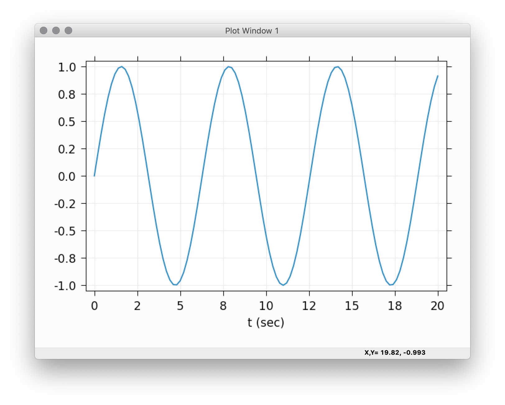
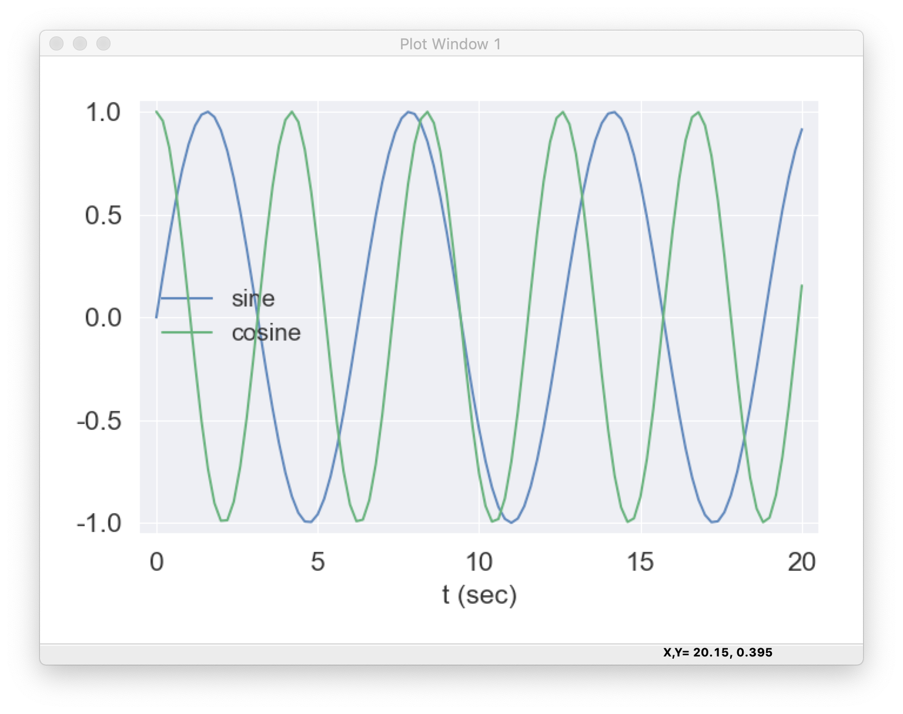

Interactive displays#
The Overview describes the main features of wxmplot and shows how wxmplot plotting functions give a richer level of customization and interactivity to the end user than is available from the standard matplotlib.pyplot when run from a script or program.
Here, the emphasis is on the immediacy of the interactivity of the data displays especially when used from interactive sessions, including plain Python REPL, IPython/Jupyter console, Jupyter Notebooks, or the Python Kernel in Jupyter Lab.
An important feature of the plot(), imshow() and other
functions of the interactive module in general is that they
display their results immediately, without having to execute a
show() method to render the display. For interactive work from the
Python REPL or one of the Jupyter prompts, the displayed windows do
not block the Python session. This means that not only can you zoom
in, change themes, etc from the Plot window, you can can also easily
plot other functions or data, either on the same window or in a new
top-level plotting window.
For Jupyter Notebooks, it should be noted that while other plotting libraries (matplotlib, plotly, and bokeh) will show graphics in-line, as part of the Notebook, wxmplot will use separate display windows, outside of the browser. Having the visual display of data outside the notebook can be considered an advantage, While the interactive plots are then not saved directly within the Notebook, the code to generate the plots can be re-run. And images of the plot results can be copied and pasted as Markdown cells.
The functions in the interactive are described in detail below.
While the functions plot(), imshow() are roughly
equivalent to those in matplotlib.pyplot, they are not exact drop-in
replacements for the pyplot functions.
Plotting in an interactive session or Jupyter#
As an example using wxmplot.interactive in a Jupyter console
session might look like this:
~> jupyter console
Jupyter console 6.6.3
Python 3.13.9 | packaged by conda-forge | (main, Oct 22 2025, 23:31:04) [Clang 19.1.7 ]
Type 'copyright', 'credits' or 'license' for more information
IPython 9.7.0 -- An enhanced Interactive Python. Type '?' for help.
Tip: Use `%timeit` or `%%timeit`, and the `-r`, `-n`, and `-o`
option s to easily profile your code.
In [1]: import numpy as np
In [2]: import wxmplot.interactive as wi
In [3]: x = np.linspace(0, 20, 101)
In [4]: wi.plot(x, np.sin(x), xlabel='t (sec)')
Out[4]: <wxmplot.interactive.PlotDisplay at 0x11ef74290>
At this point a plot like this will be displayed:
{kind=link}

The wxmplot display will have full interatvity and can be configured after it is drown.
For example, from the Plot Configuration window we could change the theme to ‘Seaborn’ and set the label for this trace to be ‘sine’. Then from the Jupyter console we can continue:
In [5]: wi.plot(x, np.cos(1.5*x), label='cosine', show_legend=True)
Out[5]: <wxmplot.interactive.PlotDisplay at 0x10db88678>
which will now show:
{kind=link}

which is again a fully interactive and configurable display. For example, with the legend displayed, clicking on any of the labels in the legend will toggle the display of that curve. If we want to clear the data and plot something new, we might do something like:
In [6]: wi.plot(x, x*np.log(x+1), label='xlogx', new=True)
Out[6]: <wxmplot.interactive.PlotDisplay at 0x10db88678>
We can also place a text string, arrow, horizontal, or vertical line on the plot, as with:
In [7]: wi.plot_text('hello!', 9.1, 0.87)
and so forth.
If we wanted to bring up a second Line Plot window, we can use the win=2 option:
In [8]: wi.plot(x, np.sin(x)*np.exp(-x/8) , win=2, theme='ggplot')
Out[8]: <wxmplot.interactive.PlotDisplay at 0x110b2fb88>
and then control which of the displays any additional plot functions use by passing the win option to the plotting functions.
The immediacy of the rendering and the ability to customize the plots makes these plotting functions well-suited for exploratory displays of data.
Examples of ipython notebook files are included in the examples folder.
Using the interactive functions from a script#
When using the interactive functions in a script or program
that is run in a non-interactive way, say from a commandline shell,
the wxmplot displays will still appear. The act of plotting will not
block further execution of the script, and the script will continue to
run, possibly making more wxmplot displays. When the script reaches
is end, the displays will not be automatically closed. Instead, the
plots and images will remain displayed and fully interactive until all
windows have been closed or until the running script is explicitly
closed (say, with Ctrl-D). That means that you can add wi.plot()
and wi.imshow() to your scripts and the plots will be displayed
until you no longer want to use them.
Displaying images with imshow() and contour()#
- wxmplot.interactive.imshow(map, ...)[source]#
Display an 2-D array of intensities as a false-color map
- Parameters:
map (ndarray) – map array data (see Note 1)
y (array-like) – values for pixels along vertical direction
x (array-like) – values for pixels along horizontal direction
colormap (str) – name of colormap to apply
win (int) – index of Image Window (1 to %d)
size (tuple) – width, height in pixels of Image Window
wintitle (str) – text for Window title [Image Window N]
xlabel (str) – label for horizontal axis [‘X’]
ylabel (str) – label for horizontal axis [‘Y’]
style (str) – display style (‘image’ or ‘contour’) [‘image’]
nlevels (int) – number of levels for contour
contour_labels (bool) – whether to show contour labels [True]
show_axis (bool) – whether to shos Axis [False]
contrast_level (float or None) – percent level for contrast [‘0.1’]
- Returns:
img, an ImageFrame
Notes
the map data can either be a 2d array (shape NY, NX) for single-color map or (NY, NX, 3) array for an RGB map
Functions for working with the interactive windows#
- wxmplot.interactive.set_theme(theme)[source]#
set plotting theme by name with a theme name
- Parameters:
theme (str) – name of theme
- Returns:
None
Notes
Example themese are: ‘auto’, ‘light’, ‘dark’, ‘white-background’, ‘matplotlib’, ‘seaborn’, ‘ggplot’, ‘bmh’, ‘fivethirtyeight’.
See available_themes() for the list of available themes.
The theme ‘auto’ will reflect (and chnage with) the system dark-mode setting, choosing ‘light’ or ‘dark’ as appropriate.
- wxmplot.interactive.available_themes()[source]#
list of available theme
Returns: list of theme names.
Notes: As of this writing, the list is:
‘auto’, ‘light’, ‘dark’, ‘white-background’, ‘matplotlib’, ‘seaborn’, ‘ggplot’, ‘bmh’, ‘fivethirtyeight’, ‘grayscale’, ‘dark_background’, ‘tableau-colorblind10’, ‘seaborn-bright’, ‘seaborn-colorblind’, ‘seaborn-dark’, ‘seaborn-darkgrid’, ‘seaborn-dark-palette’, ‘seaborn-deep’, ‘seaborn-notebook’, ‘seaborn-muted’, ‘seaborn-pastel’, ‘seaborn-paper’, ‘seaborn-poster’, ‘seaborn-talk’, ‘seaborn-ticks’, ‘seaborn-white’, ‘seaborn-whitegrid’, ‘Solarize_Light2’
- wxmplot.interactive.get_wxapp(redirect=False, clearSigInt=True)[source]#
get the wx App
- Parameters:
redirect (bool) – whether to redirect output that would otherwise be written to the Console [False]
clearSigInt (bool) – whether to clear interrupts of Ctrl-C [True]
- Returns:
a wx.App instance
- wxmplot.interactive.get_plot_window(win=1, size=None, wintitle=None, theme=None)[source]#
return a plot display
- Parameters:
win (int) – index of Plot Window (1 to 100)
size (tuple) – width, height in pixels of Plot Window
wintitle (str) – text for Window title [Plot Window N]
theme (str) – theme for Plot Window [‘auto’]
- Returns:
diplay, a wxmplot PlotFrame.
Notes
this will either return the existing PlotFrame for the window index or create a new one.
The returned wx.PlotFrame from get_plot_window() will
have the many attributes and methods, with some of the most useful
described in the table below, Table of interactive Plot Window
attributes and methods. This includes access to the
underlying matplotlib Axes and Canvas objects.
- wxmplot.interactive.get_image_window(win=1, size=None, wintitle=None)[source]#
return an image display
- Parameters:
win (int) – index of Image Window (1 to 100)
size (tuple) – width, height in pixels of Image Window
wintitle (str) – text for Window title [Image Window N]
- Returns:
diplay, a wxmplot ImageFrame.
Notes
this will either return the existing ImageFrame for the window index or create a new one.
As with wx.PlotFrame, the returned wx.ImageFrame will
have the same principle attributes to access the matplotlib Axes and Canvas
objects.
Plot frame attributes and methods#
Table of interactive Plot Window attributes and methods
name
object type
.cursor_history
[(x, y, timestamp), …] of cursor selections
.save_figure()
method to save image to a png file
.configure()
method to show Configuration window
.get_config()
method to return configuration dictionary
.set_config()
method to update configuration with keyword/values
.panel
wxmplot.PlotPanel, a wx.Panel
.panel.conf
wxmplot.PlotConfig
.panel.axes
matplotlib.axes.AxesSubPlot
.panel.fig
matplotlib.figure.Figure
.panel.canvas
matplotlib.backends.backend_wxagg.FigureCanvasWxAgg
Note that the cursor_history attribute will be a list of (x, y, timestamp) values with x and y being in “user coordinates, timestamp being the Unix timestamp for each even of pressing the left mouse button on the plot. The most recent event will be in cursor_history[0], and the list will be in descending time order. Only the most recent 100 cursor events will be retained.
Each new plot will clear the cursor_history.